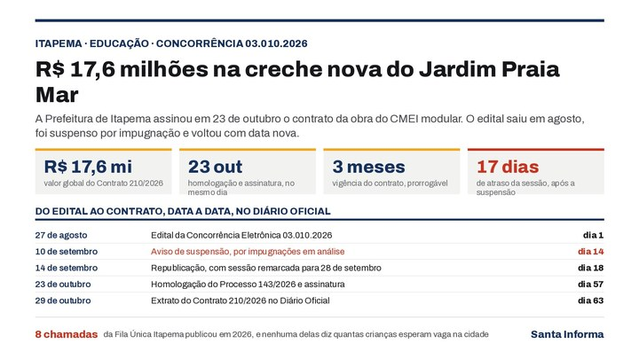
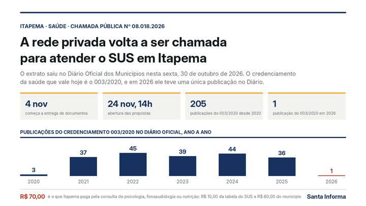

Itapema · EducaçãoItapema assinou o contrato de R$ 17,6 milhões da creche do Jardim Praia Mar, e o edital que gerou a obra ficou suspenso em setembro por impugnação
A creche nova do mesmo bairro, do edital ao contrato.
O Extrato do 4º Termo Aditivo ao Contrato nº 104/2025 saiu no Diário Oficial dos Municípios nesta quinta, 29 de outubro. Ele estica o prazo da obra em 90 dias, de 28 de dezembro de 2026 a 27 de março de 2027. Procuramos o número do contrato no Diário e achamos oito publicações. Com elas montamos a série: 235 dias de prorrogação em dois aditivos e R$ 873.381,96 de acréscimo em outros dois, 19,85% do valor inicial.
Em 30 segundos · Modo de Leitura, formato original Santa Informa
A UBS do Jardim Praiamar ganhou mais prazo.
É a UBS Porte IV da Rua 458.
O contrato dela é o nº 104/2025.
Saiu o 4º termo aditivo.
No Diário Oficial dos Municípios.
Nesta quinta, 29 de outubro.
Ele prorroga o prazo em 90 dias.
De 28 de dezembro de 2026.
Até 27 de março de 2027.
A assinatura do aditivo foi em 27 de outubro.
A contratada é a Centaurus Construções.
Procuramos o número do contrato no Diário.
Achamos 8 publicações.
O contrato foi assinado em 4 de agosto de 2025.
Valia R$ 4.399.000,00.
A vigência era de 12 meses.
O 1º aditivo é de 25 de março de 2026.
Acrescentou R$ 170.270,04.
Isso dá 3,87% do contrato.
O 2º apostilamento é de 23 de maio.
Reajustou o saldo pelo INPC.
Em 3,7688%, desde 13 de maio.
O 2º aditivo é de 14 de julho.
Esticou o prazo em 145 dias.
O 3º aditivo é de 20 de julho.
Acrescentou R$ 703.111,92.
Isso dá 15,98% do contrato.
Somando as duas prorrogações: 235 dias.
Somando os dois acréscimos: R$ 873.381,96.
Ou 19,85% do valor inicial.
O valor com eles vai a R$ 5.272.381,96.
Sem contar o reajuste do INPC.
O documento não diz quanto ele somou em reais.
Da assinatura ao novo prazo: 600 dias.
O objeto do 4º aditivo fala em acréscimo de valores.
A cláusula publicada só trata do prazo.
O contrato original diz Rua 456.
Os cinco documentos seguintes dizem Rua 458.
Não falamos com a Secretaria de Saúde.
Poder PúblicoPublicada em Redação Santa Informa
![Ilustração com o rótulo Itapema, saúde, Contrato 104/2025 e o título a UBS do Jardim Praiamar chegou ao quarto aditivo. Quatro quadros de número trazem 600 dias da assinatura ao novo prazo de entrega, 235 dias de prorrogação em dois aditivos, destacados em vermelho, R$ 873 mil de acréscimo correspondente a 19,85% do contrato e R$ 5,27 milhões de valor inicial somado aos dois acréscimos. Abaixo, uma tabela chamada o contrato da UBS, documento a documento, no Diário Oficial, com seis linhas: 4 de agosto de 2025, contrato assinado com vigência de 12 meses, R$ 4.399.000,00; 25 de março de 2026, primeiro aditivo de 3,87%, mais R$ 170.270,04; 23 de maio de 2026, segundo apostilamento com saldo reajustado pelo INPC, mais 3,7688%; 14 de julho de 2026, segundo aditivo com prazo até 27 de dezembro de 2026, mais 145 dias, em vermelho; 20 de julho de 2026, terceiro aditivo de 15,98%, mais R$ 703.111,92; e 27 de outubro de 2026, quarto aditivo com prazo até 27 de março de 2027, mais 90 dias, em vermelho. No rodapé, a frase sem valor em vermelho, dizendo que o extrato do quarto aditivo fala em acréscimo de valores no objeto mas não diz de quanto é.](imagens/webp/ilustracao-m348.webp)
A Prefeitura de Itapema publicou nesta quinta-feira, 29 de outubro, no Diário Oficial dos Municípios, o Extrato do 4º Termo Aditivo ao Contrato nº 104/2025, da Unidade Básica de Saúde Porte IV que está sendo construída no bairro Jardim Praiamar. O documento prorroga o prazo contratual e o prazo de execução da obra por 90 dias, entre 28 de dezembro de 2026 e 27 de março de 2027. A contratada é a Centaurus Construções e Serviços Ltda, CNPJ 03.415.066/0001-30, e a assinatura é de 27 de outubro. Entre a assinatura do contrato e esse novo prazo final vão 600 dias, conta nossa.
Procuramos o número do contrato na busca do Diário Oficial dos Municípios e achamos oito publicações da Prefeitura. O contrato foi assinado em 4 de agosto de 2025, com R$ 4.399.000,00 e vigência de 12 meses. Em 25 de março de 2026, o 1º aditivo somou R$ 170.270,04, ou 3,87% do valor inicial. Em 23 de maio, um termo de apostilamento corrigiu o saldo remanescente pelo INPC, em 3,7688%, a pedido da empresa. Em 14 de julho, o 2º aditivo esticou o prazo em 145 dias. Em 20 de julho, o 3º somou mais R$ 703.111,92, ou 15,98%. Com o aditivo desta semana, a prorrogação chega a 235 dias e o acréscimo a R$ 873.381,96, 19,85% do contrato. O valor vai a R$ 5.272.381,96, sem contar o reajuste do INPC, que o documento não converte em reais. As somas são nossas.
O contrato original diz que a UBS fica na Rua 456. Os cinco documentos seguintes, do primeiro aditivo ao quarto, dizem Rua 458. Abrimos os seis, um a um. Nenhum deles registra correção de endereço, e não há errata publicada sobre isso.
O Jardim Praiamar apareceu duas vezes na edição desta quinta-feira. Além do aditivo da UBS, saiu o contrato de R$ 17,6 milhões da creche nova do mesmo bairro, um CMEI de sistema construtivo modular. São duas obras de porte, no mesmo pedaço da cidade, uma começando e a outra pedindo mais tempo.
O resumo de 30 segundos está no topo e a versão completa é o texto acima. Aqui ficam as três leituras da casa sobre o mesmo assunto.
Clara, a otimista
Vale lembrar o que está sendo construído ali: uma Unidade Básica de Saúde Porte IV, que é o tamanho maior da lista do Ministério da Saúde. É unidade para consultório, sala de vacina, curativo, coleta e odontologia, num bairro que hoje depende de UBS de outro lugar. Isso muda caminhada, ônibus e hora de espera para muita gente.
Tem coisa boa no caminho até aqui. A obra não parou: nos quinze meses do contrato apareceram acréscimo de serviço, reajuste de insumo e remarcação de prazo, que é o retrato de canteiro andando. E o município publicou cada passo, com número, percentual e data. Dá para acompanhar sem pedir nada a ninguém, o que não é pouco.
Seu Prudêncio, o criterioso
Merece atenção o tamanho do acréscimo. Somados, os dois aditivos de valor chegam a 19,85% do contrato inicial. A Lei 14.133 admite acréscimo de até 25% em obra, então o número cabe no limite, e é justamente por isso que convém olhá-lo agora: sobra pouco espaço antes do teto, e a obra ainda tem cinco meses de prazo pela frente.
O ponto que mais merece cuidado é a soma do preço final. O apostilamento de maio publicou o percentual do INPC e não o valor em reais que ele gerou. Sem isso, quem acompanha de fora não fecha a conta da obra, só a aproxima. E o extrato desta semana cria uma segunda dúvida: o objeto diz acréscimo de valores, a cláusula fala só de prazo. Uma das duas informações está incompleta.
Uma sugestão útil: publicar o valor acumulado do contrato a cada aditivo, numa linha só, do jeito que o município já faz com o percentual. Resolveria as duas coisas de uma vez. Dito isso, há mérito no registro. Seis documentos em quinze meses, todos no Diário, com percentual, data de assinatura e prazo exato, é mais do que muita prefeitura da região publica, e foi só com eles que esta matéria existiu.
Caco, o sarcástico
Quatro aditivos, duas datas de entrega e um endereço que ninguém decidiu. A UBS do Jardim Praiamar começou na Rua 456 e, do segundo documento em diante, mudou para a 458. Dois números de distância. Para obra parada no papel é pouco, para carteiro é uma vida.
A entrega era para agosto, virou dezembro, agora é março. Nesse ritmo a unidade inaugura junto com a próxima temporada, e aí todo mundo vai dizer que foi planejado assim, para atender turista.
Reclamação registrada. Mas tá bom porque é progresso: o prazo novo tem dia certo, 27 de março, e dia certo é coisa que dá para cobrar. É mais do que a gente tinha na semana passada, quando o prazo era um assunto que só a Prefeitura sabia.
Fontes: A prorrogação de 90 dias, as datas de 28 de dezembro de 2026 e 27 de março de 2027, a contratada Centaurus Construções e Serviços Ltda e a assinatura em 27 de outubro estão no Extrato do 4º Termo Aditivo ao Contrato nº 104/2025, publicado pela Prefeitura de Itapema no Diário Oficial dos Municípios de Santa Catarina em 29 de outubro de 2026, edição 5280. O valor de R$ 4.399.000,00, a vigência de 12 meses, a assinatura em 4 de agosto de 2025 e a menção à Rua 456 estão no Extrato do Contrato nº 104/2025, de 5 de agosto de 2025. O acréscimo de R$ 170.270,04 e os 3,87% estão no Extrato do 1º Termo Aditivo, de 26 de março de 2026. O reajuste de 3,7688% pelo INPC, válido desde 13 de maio, está no Extrato do 2º Termo de Apostilamento, de 25 de maio de 2026. A prorrogação de 145 dias, entre 5 de agosto e 27 de dezembro de 2026, está no Extrato do 2º Termo Aditivo, de 14 de julho de 2026, e o acréscimo de R$ 703.111,92 e os 15,98% estão no Extrato do 3º Termo Aditivo, de 20 de julho de 2026. A contagem de oito publicações, a soma de 235 dias, a de R$ 873.381,96, o percentual de 19,85%, o valor de R$ 5.272.381,96 e as contas de 600 e 453 dias saem da busca do Diário Oficial dos Municípios, que rodamos neste sábado pelo número do contrato, e são conta nossa. O contrato da creche do mesmo bairro está na nossa matéria desta manhã. Não falamos com a Secretaria Municipal de Saúde de Itapema nem com a Centaurus Construções e Serviços para esta matéria.

Itapema · EducaçãoA creche nova do mesmo bairro, do edital ao contrato.

Itapema · SaúdeA outra frente da saúde que a cidade mexeu nesta semana.
 Itapema · Saúde
Itapema · SaúdeO que a rede própria da cidade dá conta de fazer hoje.